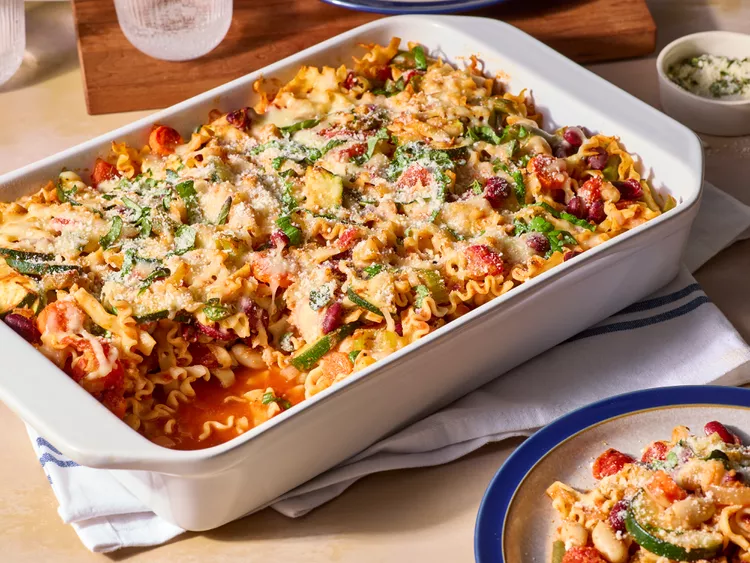

Home
Casserole

Minestrone Casserole
This minestrone casserole, with fresh vegetables, canned beans, and pasta in a tomoto sauce, topped with mozzarella and Parmesan cheese, is a delicious new twist on minestrone soup.
Ingredients
- 4 cups dried mafalda pasta
- 2 tablespoons olive oil
- 2 carrots, sliced
- 2 stalks celery, sliced
- 1 onion, chopped
- 1 zucchini, quartered lenghtwise and sliced
- 2 cloves garlic, minced
- 15-ounce can red kidney beans
- 15-ounce diced tomatoes with italian herbs
- 1/2 teaspoon salt
- 1 cup shredded mozzarella cheese
How to Make Minestrone caserolla Step-By-Step
- Preheat the oven to 350 degrees F. Lightly coat a 3-quart baking dish with non-stick cooking spray.
- Bring a large pot of water to a boil. Add pasta and cook, covered, for the minimum time according to package directions. Drain and transfer to a large bowl.
- Meanwhile, heat oil in a large skillet over medium heat. Add onion, carrots, and celery; cover and cook, stirring occassionally, until carrots are just tender, 5 to 8 minutes. Add zucchini and garlic. Cook and stir one minute more.
- Add carrot mixture, beans and tomatoes, green beans, tomato sauce, 1/4 cup parmesan cheese, italian seasoning, salt, pepper to bowl of pasta. Stir well to combine. Transfer pasta mixture to the prepared dish and cover with foil.
- Bake in preheated oven for 20 mins. Remove foil and top with mozzarella cheese, continue baking until heated through and cheese is melted, 10 to 15 mins. Top each serving with remaining parmesan cheese and sprinkle with fresh herbs.